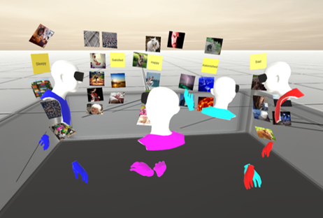

Towards Immersive Collaborative Sensemaking

Venue. ACM ISS (2022)
Authors. Ying Yang, Tim Dwyer, Michael Wybrow, Benjamin Lee, Maxime Cordeil, Mark Billinghurst, Bruce H Thomas
Abstract. When collaborating face-to-face, people commonly use the surfaces and spaces around them to perform sensemaking tasks, such as spatially organising documents, notes or images. However, when people collaborate remotely using desktop interfaces they no longer feel like they are sharing the same space. This limitation may be overcome through collaboration in immersive environments, which simulate the physical in-person experience. In this paper, we report on a between-groups study comparing collaborations on image organisation tasks, in an immersive Virtual Reality (VR) environment to more conventional desktop conferencing. Collecting data from 40 subjects in groups of four, we measured task performance, user behaviours, collaboration engagement and awareness. Overall, the VR and desktop interface resulted in similar speed, accuracy and social presence rating, but we observed more conversations and interaction with objects, and more equal contributions to the interaction from participants within groups in VR. We also identified differences in coordination and collaborative awareness behaviours between VR and desktop platforms. We report on a set of systematic measures for assessing VR collaborative experience and a new analysis tool that we have developed to capture user behaviours in collaborative setting. Finally, we provide design considerations and directions for future work.